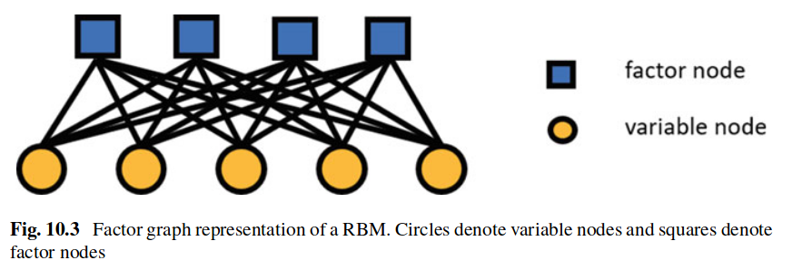

波尔兹曼机是物理模型，同时也是早期的机器学习模型。
Reference: * 神经网络的统计力学 – 受限制玻尔兹曼机的统计力学
Boltzmann Machine
上图(a)为玻尔兹曼机，类似于Ising模型，但是任意两个节点之间均含有连接。 $$\begin{align} E(\boldsymbol{\sigma})=-\sum_i h_i \sigma_i-\sum_{i<j} w_{i j} \sigma_i \sigma_j \label{Ising} \end{align}$$
其中σi = ±1是节点i的取值，wij是任意两个节点之间的链接权重，hi为外磁场项（可以理解为偏置项）。构型的波尔兹曼分布为： $$\begin{align} p(\boldsymbol{\sigma})=\frac{1}{Z} e^{-\beta E(\sigma)} \end{align}$$ 其中Z = ∑σe−βE(σ)为配分函数。给定数据，数据表现形式通过σ表现，目标是设计权重wij，使得对应构型的概率分布（波尔兹曼分布）较大；类似与Hopfield模型，可以通过输入部分构型，还原出整体的构型。这个任务本质上就是逆 Ising 问题（Inverse Ising Problem）。
为了讨论方便，这里假设 hi = 0 ∀i。当然，比较直接的权重设计方案是 Hebbian rule，但是这个并不是最优的结果。以下使用极大似然估计方法。
$$ \begin{align} L(\boldsymbol{\theta} \mid\{\boldsymbol{\sigma}\}) & =\left\langle\log \left(p_{\boldsymbol{\theta}}(\boldsymbol{\sigma})\right)\right\rangle_{\text {data }} \\ & =-\langle E(\boldsymbol{\sigma}, \boldsymbol{\theta})\rangle_{\text {data }}-\log Z(\boldsymbol{\theta}) \\ & =\sum_{i=1}^N h_i\left\langle\sigma_i\right\rangle_{\text {data }}+\sum_{i<j} w_{i j}\left\langle\sigma_i \sigma_j\right\rangle_{\text {data }}-\log Z(\boldsymbol{\theta}) \end{align} $$
其中⟨…⟩data 表示对数据求平均，θ 表示模型参数 {W, h}，计算L(θ ∣ {σ}) 梯度：
$$ \begin{align} \frac{\partial L}{\partial h_i} & =\left\langle\sigma_i\right\rangle_{\text {data }}-\left\langle\sigma_i\right\rangle_{\text {model }} \\ \frac{\partial L}{\partial w_{i j}} & =\left\langle\sigma_i \sigma_j\right\rangle_{\text {data }}-\left\langle\sigma_i \sigma_j\right\rangle_{\text {model }} \end{align} $$
其中⟨…⟩model 表示模型平均，表示的模型的热力学平均，是一个加权平均，穷举计算法耗时太长，直接计算是不现实的，可以认为是一个重要性抽样，从而使用蒙卡的方案计算。模型参数的梯度更新可以写为：
$$\begin{align} \Delta h_i & =\eta \frac{\partial L}{\partial h_i}=\eta\left(\left\langle\sigma_i\right\rangle_{\text {data }}-\left\langle\sigma_i\right\rangle_{\mathrm{model}}\right) \\ \Delta w_{i j} & =\eta \frac{\partial L}{\partial w_{i j}}=\eta\left(\left\langle\sigma_i \sigma_j\right\rangle_{\text {data }}-\left\langle\sigma_i \sigma_j\right\rangle_{\mathrm{model}}\right) \end{align}$$
其中η表示学习率。第一部分是数据的平均值，可以通过对数据进行平均计算；第二部分是模型的平均值，这部分计算如之前的描述，只能采用MCMC方法等重要性抽样方法才能计算（两点关联可以转化为点$\frac{\partial\left\langle\sigma_i\right\rangle_{\text {model }}}{\partial h_j}=\left\langle\sigma_i \sigma_j\right\rangle_{\text {model }}-\left\langle\sigma_i\right\rangle_{\text {model }}\left\langle\sigma_j\right\rangle_{\text {model }}$），然而由于模型的hj与wij每一步都会发生变化，意味着每一次更新参数就需要重新进行一次重要性抽样，这显然是不能接受的。
如果存在更高关联，例如三阶：
$$\begin{align} E(\boldsymbol{\sigma})=-\sum_i h_i \sigma_i-\sum_{i<j} w_{i j} \sigma_i \sigma_j-\sum_{i<j<k}\kappa_{ijk}\sigma_i\sigma_j\sigma_k \end{align}$$
如何将这些关联以另一种形式展现，从而避免计算上的复杂性，这里引入一个隐变量s。
$$\begin{align} E(\boldsymbol{\sigma},s)=-\sum_i h_i \sigma_i-\sum_{i<j} w_{i j} \sigma_i \sigma_j-s\sum_{i}\sigma_i k_i \end{align}$$
其中ki表示σi与隐变量之间的强度。可知其波尔兹曼分布为：
$$\begin{align} P(\boldsymbol{\sigma},s) &\sim \exp\left(E(\boldsymbol{\sigma},s)\right) \\ P(\boldsymbol{\sigma}) &=\sum_{s}\exp\left(E(\boldsymbol{\sigma},s)\right) \\ &\sim \exp\left(-\sum_i h_i \sigma_i-\sum_{i<j} w_{i j} \sigma_i \sigma_j\right)2\cosh\left(\sum_i\sigma_i k_i\right) \\ &= \exp\left(-\sum_i h_i \sigma_i-\sum_{i<j} w_{i j} \sigma_i \sigma_j\right)\exp\left( \ln\left[ 2\cosh\left(\sum_i\sigma_i k_i\right) \right] \right) \end{align}$$
可以将ln [2cosh (∑iσiki)]展开，从而得到高阶项: $$ \log (2 \cosh (x))=\log (2)+\frac{x^2}{2}-\frac{x^4}{12}+O\left(x^6\right) $$
上面只是引入一个隐变量，更普遍的是具有更多隐变量图中(b)，这样会使得模型表达能力提升。对应的能量为：
$$\begin{align} E(\boldsymbol{\sigma},s)=-\sum_i h_i \sigma_i-\sum_{i<j} w_{i j} \sigma_i \sigma_j-\sum_{i,a}k_{ia}\sigma_i s_a-\sum_{a<b}\gamma_{ab}s_a s_b \end{align}$$
需要学习的模型参数除了$\eqref{Ising}$中提到的w与h以外，还需要学习kab与γab两个参数：
$\begin{aligned} & \Delta k_{a b}=\eta\left(\left\langle\sigma_i s_a\right\rangle_{\text {data }}-\left\langle\sigma_i s_a\right\rangle_{\text {model }}\right) \\ & \Delta \gamma_{a b}=\eta\left(\left\langle s_a s_b\right\rangle_{\text {data }}-\left\langle s_a s_b\right\rangle_{\text {model }}\right) \end{aligned}$
由于s是隐变量，并不能直接直接得到，但是可以得到其概率值，例如通过 Sigmoid 函数： $$\begin{align} P(s_a=1|\mathbf{\sigma})=\text{sigmoid}\left( -\sum_{i,a}k_{ia}\sigma_i-\sum_{a<b}\gamma_{ab}s_b \right) \end{align}$$
可以看到上面的计算过程中使用到了其它隐变量s，这里不得不进行近似，使用伯努力采样赋予s值；依据这个过程将所有的隐变量概率以及具体的值计算出来。
可以看到在加入隐变量值后，计算CD散度需要更多的蒙卡模拟从而得到模型平均。这是一个十分费时的过程。
Restricted Boltzmann Machine
为了解决计算模型平均花费很多时间，将一些关联项进行省略，包含可见变量之间的相互作用以及隐变量之间的相互作用项，将这个模型称之为受限玻尔兹曼机。
$$\begin{align} E(\boldsymbol{\sigma}, \boldsymbol{s})=-\sum_{i, a} \sigma_i w_{i a} s_a-\sum_i \phi_i \sigma_i-\sum_a h_a s_a \end{align}$$
其中σ与s为可见变量与隐变量，其余参数为相互作用强度与偏置项。波尔兹曼分布为：
$$\begin{align} p(\boldsymbol{\sigma}, \boldsymbol{s})=\frac{1}{Z} e^{-\beta E(\boldsymbol{\sigma}, s)} \end{align}$$
其中Z = ∑σ, se−βE(σ, s)，并且假设β = 1，将其作用吸收进相互作用参数中。
将相同类型的节点之间的相互作用断开，好处在于可以实现近独立分布。只需要知道可见节点（隐藏节点）就可以推断出隐藏节点（可见节点）的概率分布，相同类型节点之间是独立的。
$$ \begin{align} p\left(\sigma_i \mid \boldsymbol{s}\right) & =\frac{\sum_{\left\{\sigma_j: j \neq i\right\}} p(\boldsymbol{\sigma}, \boldsymbol{s})}{\sum_\sigma p(\boldsymbol{\sigma}, \boldsymbol{s})} \\ & =\frac{e^{\sigma_i\left(\phi_i+\sum_a w_{i a} s_a\right)}}{e^{\sigma_i\left(\phi_i+\sum_a w_{i a} s_a\right)}+e^{-\sigma_i\left(\phi_i+\sum_a w_{i a} s_a\right)}} \\ & =\frac{1}{1+e^{-2 \sigma_i\left(\phi_i+\sum_a w_{i a} s_a\right)}} \\ p\left(s_a \mid \boldsymbol{\sigma}\right) & =\frac{\sum_{\left\{s_b: b \neq a\right\}} p(\boldsymbol{\sigma}, \boldsymbol{s})}{\sum_s p(\boldsymbol{\sigma}, \boldsymbol{s})} \\ & =\frac{e^{s_a\left(h_a+\sum_i w_{i a} \sigma_i\right)}}{e^{s_a\left(h_a+\sum_i w_{i a} \sigma_i\right)}+e^{-s_a\left(h_a+\sum_i w_{i a} \sigma_i\right)}} \\ & =\frac{1}{1+e^{-2 s_a\left(h_a+\sum_i w_{i a} \sigma_i\right)}} \end{align} $$
计算权重的方法与玻尔兹曼机类似，同样使用极大似然估计。
$$\begin{align} \mathcal{L}(\boldsymbol{\theta} \mid\{\boldsymbol{\sigma}\}) & =\left\langle\log \left(p_{\boldsymbol{\theta}}(\boldsymbol{\sigma})\right)\right\rangle_{\text {data }} \\ & =-\langle E(\boldsymbol{\sigma}, \boldsymbol{\theta})\rangle_{\text {data }}-\log Z(\{\boldsymbol{\theta}\}) \end{align}$$
θ 表示参数 {W, ϕ, h}，
参数的梯度为：
$$ \begin{align} & \frac{\partial \mathcal{L}\left(\left\{w_{i a}, \phi_i, h_a\right\}\right)}{\partial w_{i a}}=\left\langle\sigma_i s_a\right\rangle_{\text {data }}-\left\langle\sigma_i s_a\right\rangle_{\text {model }} \\ & \frac{\partial \mathcal{L}\left(\left\{w_{i a}, \phi_i, h_a\right\}\right)}{\partial \phi_i}=\left\langle\sigma_i\right\rangle_{\text {data }}-\left\langle\sigma_i\right\rangle_{\text {model }} \\ & \frac{\partial \mathcal{L}\left(\left\{w_{i a}, \phi_i, h_a\right\}\right)}{\partial h_a}=\left\langle s_a\right\rangle_{\text {data }}-\left\langle s_a\right\rangle_{\text {model }} \end{align} $$
Free Energy Calculation
$$\begin{align} p(\boldsymbol{\sigma}) & =\sum_s p(\boldsymbol{\sigma}, \boldsymbol{s}) \\ & =\frac{1}{Z} \sum_s e^{\sum_a\left(\sum_i \beta \sigma_i w_{i a}+\beta h_a\right) s_a+\sum_i \beta \sigma_i \phi_i} \\ & =\frac{1}{Z} e^{\sum_i \beta \sigma_i \phi_i} \sum_s \prod_a e^{\left(\sum_i \beta \sigma_i w_{i a}+\beta h_a\right) s_a} \\ & =\frac{1}{Z} \prod_i e^{\beta \sigma_i \phi_i} \prod_a \sum_{s_a} e^{\left(\sum_i \beta \sigma_i w_{i a}+\beta h_a\right) s_a} \\ & =\frac{1}{Z} \prod_i e^{\beta \sigma_i \phi_i} \prod_a\left[2 \cosh \left(\beta \boldsymbol{w}_a \boldsymbol{\sigma}+\beta h_a\right)\right], \end{align}$$
可见cavity 计算是将复杂计算转化为因子图迭代的过程，这是一种巧妙的近似，它的适用范围不限于计算自由能。
画出因子图： 
factor node表示2cosh (βwaσ + βha)，variable node 表示σi。可以得到cavity迭代方程为：
$$ \begin{align} & P_{i \rightarrow a}\left(\sigma_i\right)=\frac{1}{Z_{i \rightarrow a}} e^{\phi_i \sigma_i} \prod_{b \in \partial i \backslash a} \mu_{b \rightarrow i}\left(\sigma_i\right) ; \\ & \mu_{b \rightarrow i}\left(\sigma_i\right)=\sum_{\left\{\sigma_j \mid j \in \partial b \backslash i\right\}} 2 \cosh \left(\boldsymbol{w}_b \sigma+h_b\right) \prod_{j \in \partial b \backslash i} P_{j \rightarrow b}\left(\sigma_j\right), \end{align} $$
其中 Zi → a = eϕi∏b ∈ ∂i ∖ aμb → i(+1) + e−ϕi∏b ∈ ∂i ∖ aμb → i(−1)，虽然已经近似处理，但是求解这个迭代方程需要O(2N − 1)的时间复杂度，因此还需要进一步近似。
定义 𝒰b → i ≡ ∑j ∈ ∂b ∖ iwjbσj，根据中心极限定理（central limit theorem (CLT)）在N 较大的情况下 𝒰b → i应该服从高斯分布，因此𝒰b → i的均值和方差写为：
$$ \begin{align} G_{b \rightarrow i} & =\left\langle\mathcal{U}_{b \rightarrow i}\right\rangle_{\left\{\sigma_j \mid j \in \partial b \backslash i\right\}}=\sum_{j \in \partial b \backslash i} w_{j b} m_{j \rightarrow b} \label{G}\\ \Xi_{b \rightarrow i}^2 & =\left\langle\mathcal{U}_{b \rightarrow i}^2\right\rangle_{\left\{\sigma_j \mid j \in \partial b \backslash i\right\}}-\left\langle\mathcal{U}_{b \rightarrow i}\right\rangle_{\left\{\sigma_j \mid j \in \partial b \backslash i\right\}}^2 \\ & \simeq \sum_{j \in \partial b \backslash i} w_{j b}^2\left(1-m_{j \rightarrow b}^2\right)\\ m_{j \rightarrow b} &\equiv \sum_{\sigma_j} \sigma_j P_{j \rightarrow b}\left(\sigma_j\right) \end{align} $$
因此 μb → i(σi) 利用高斯积分可以近似写为：
$$ \begin{aligned} \mu_{b \rightarrow i}\left(\sigma_i\right) & =2 \int D t \cosh \left(G_{b \rightarrow i}+\sqrt{\Xi_{b \rightarrow i}^2} t+h_b+w_{i b} \sigma_i\right) \\ & =2 e^{\frac{\Xi_{b \rightarrow i}^2}{2}} \cosh \left(G_{b \rightarrow i}+h_b+w_{i b} \sigma_i\right), \end{aligned} $$
其中 $D t \equiv e^{-t^2 / 2} / \sqrt{2 \pi} d t$。接下来计算mj → b即变量节点的概率：
$$ \begin{align} m_{j \rightarrow b} & =\sum_{\sigma_j} \sigma_j P_{j \rightarrow b}\left(\sigma_j\right) \\ & =\frac{\sum_{\sigma_i} \sigma_i e^{\phi_i \sigma_i} \prod_{b \in \partial i \backslash a} \mu_{b \rightarrow i}\left(\sigma_i\right)}{\sum_{\sigma_i} e^{\phi_i \sigma_i} \prod_{b \in \partial i \backslash a} \mu_{b \rightarrow i}\left(\sigma_i\right)} \label{10.15}\\ & =\tanh \left(\phi_i+\sum_{b \in \partial i \backslash a} u_{b \rightarrow i}\right) ; \\ u_{b \rightarrow i} & =\frac{1}{2} \ln \frac{\mu_{b \rightarrow i}(+1)}{\mu_{b \rightarrow i}(-1)}=\frac{1}{2} \ln \frac{\cosh \left(h_b+G_{b \rightarrow i}+w_{i b}\right)}{\cosh \left(h_b+G_{b \rightarrow i}-w_{i b}\right)}\label{u} \end{align} $$
从$\eqref{G},\eqref{10.15},\eqref{u}$得到自洽迭代方程。
对于自由能为：
$$ \begin{align} F & =\sum_i F_i-(N-1) \sum_a F_a \\ F_i & =-\ln Z_i=-\ln \left(e^{\phi_i} \prod_{b \in \partial i} \mu_{b \rightarrow i}(+1)+e^{-\phi_i} \prod_{b \in \partial i} \mu_{b \rightarrow i}(-1)\right) \\ F_a & =-\ln Z_a=-\ln \left(2 e^{\frac{\Xi_a^2}{2}} \cosh \left(G_a+h_a\right)\right) \end{align} $$
end
where . Inserting this result into the cavity probability Pi → a(σi), we obtain the cavity magnetization
where ub → i is the cavity bias (see Chap. 2). mi → a represents the massage passing from variable node i to factor node a, and ub → i denotes the massage passing from factor node b to variable node i. Iterating Eq. (10.15) can reach the fixed point. Then, the Bethe free energy can be calculated as follows:
where Fi and Fa are local free energies of variable node i and factor node a, respectively, Ξa = ∑j ∈ ∂awja2(1 − mj → a2), and Ga = ∑j ∈ ∂awjamj → a. The computation of Fa is similar to that of μa → i. Here, we show an experiment result of the free energy computation via the Bethe approximation (Fig. 10.4).